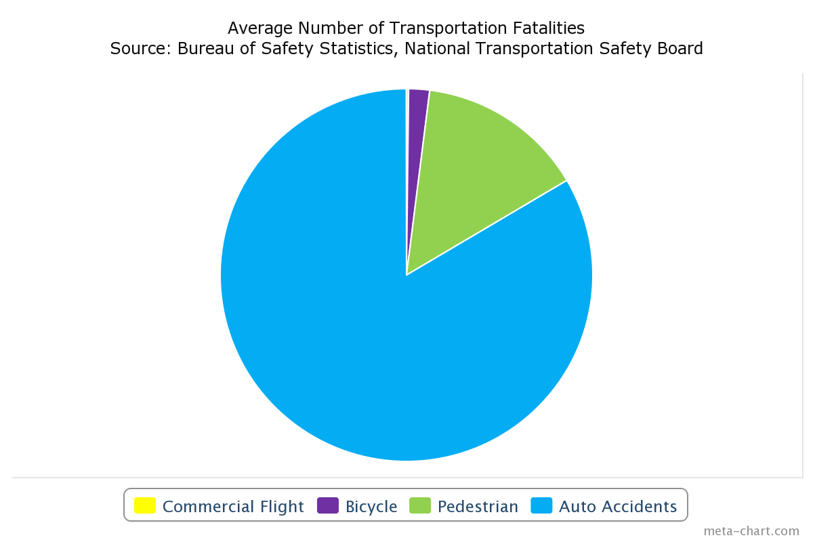

Take a look at the chart below, which shows the chance of fatalities on a commercial flight compared to other causes of death in the United States. Notice that you are more likely to die from a bee sting than from a commercial flight. Whenever we fly, we have a one one-hundred-thousandth of one percent (.000014%) chance of dying!
Sources: Natural History Museum of Los Angeles County, Massachusetts Institute of Technology, University of California at Berkeley
Data:
| Death By | Your Odds |
|---|---|
| Cardiovascular disease | 1 in 2 |
| Smoking (by/before age 35) | 1 in 600 |
| Car Trip, coast-to-coast | 1 in 14,000 |
| Bicycle Accident | 1 in 88,000 |
| Tornado | 1 in 450,000 |
| Train, coast-to-coast | 1 in 1,000,000 |
| Lightening | 1 in 1.9 million |
| Bee Sting | 1 in 5.5 million |
| US Commercial Jet Airline | 1 in 7 million |
How about accidental deaths? In the chart below you can compare the average number of airline fatalities per year (not including commuter airlines) from 1981 to 1994 with the most recent figures for other forms of accidental death
| Form | Number of Accidental Deaths |
|---|---|
| Commercial Flight | 100 |
| Bicycles | 1000 |
| Pedestrians | 8000 |
| Auto Accidents | 46000 |
Here are few more tidbits about plane crashes that you might not know:
Next time you begin to focus on the possibility of something going wrong on a plane, think about the probability instead. Then you will have little to worry about.